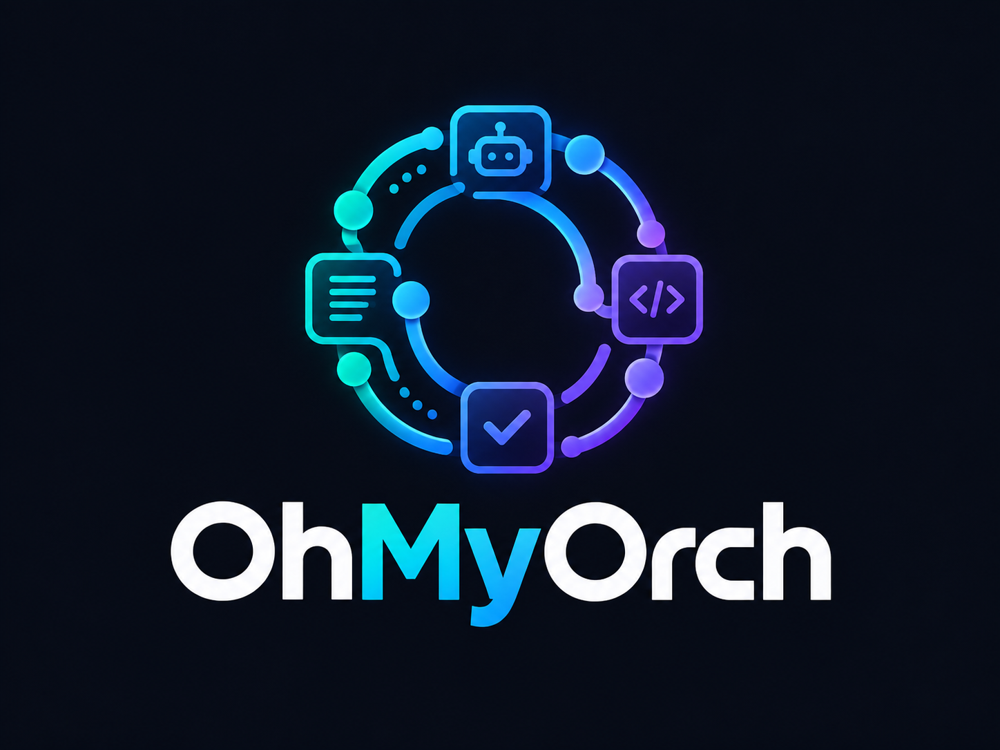
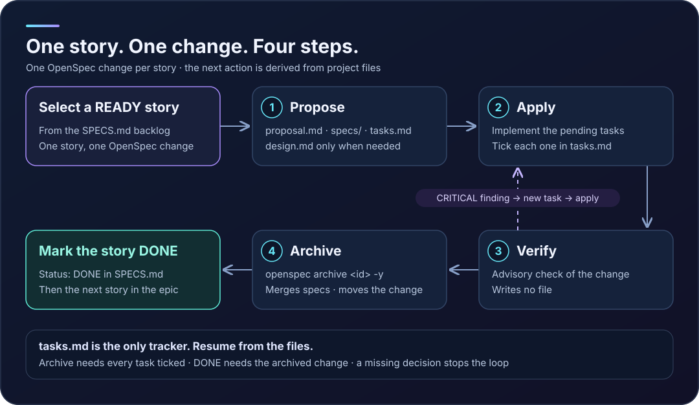
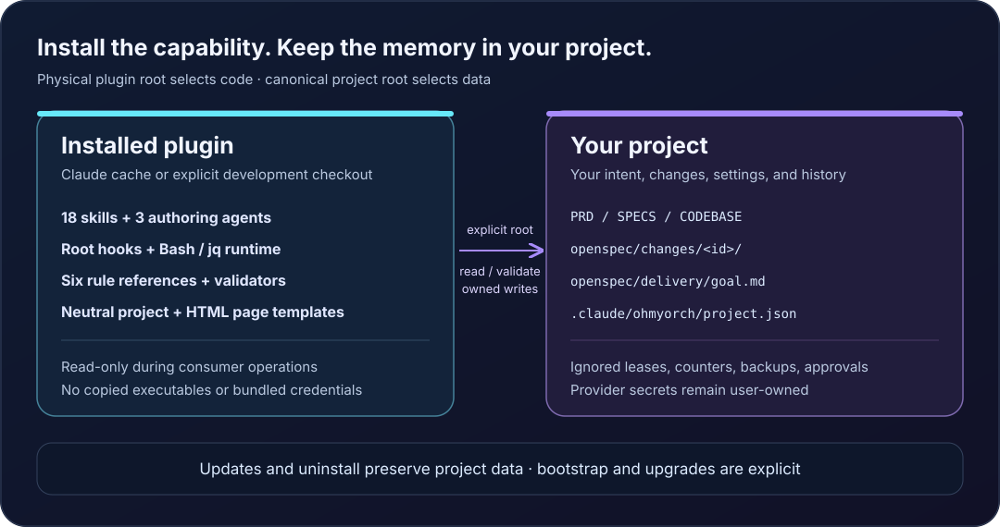

OhMyOrch

Pick a READY story
Propose it, apply it, verify it, archive it.
OhMyOrch brings a repeatable delivery loop to Claude Code. Each READY story in your SPECS.md backlog becomes one OpenSpec change. The main session proposes the change, applies its tasks, verifies the result, archives it, and marks the story DONE. The next action is always derived from project files, so you can see what is finished, what is pending, and where to resume.
OhMyOrch 0.1.0 is the version in this repository; it is not tagged, and the last tagged release is 0.0.1. The walkthrough video above was recorded for 0.0.1 and predates the propose, apply, verify, archive flow this guide describes. Authenticated delegated-agent/full-delivery tests and the distribution license remain gates for public packaged artifacts and support claims. The features below describe the implemented plugin; examples illustrate the workflow rather than claiming a completed live run.
Why the loop is useful
A large goal gets a small working unit: one independently verifiable story, one change, one next action. An epic becomes a sequence of those changes. Task focus still carries the parent story's acceptance criteria.
The record is OpenSpec's own. A change holds proposal.md, delta specs/, tasks.md and, only when the change needs it, design.md. tasks.md is the only progress tracker: a task is ticked when it is really done.
Problems stay visible in the same files. A CRITICAL verify finding becomes a new unticked task, so the change returns to apply. A missing product decision becomes a blocker, and the loop stops for a human. A new session picks up from these files, not from chat memory.
Start the whole loop with one command
In an initialized project, run /ohmyorch:deliver <target> in Claude Code. It reads the configured SPECS.md backlog and, for each story, proposes the change, applies its tasks, verifies the implementation, archives the change, and marks the story DONE. For example, to deliver an existing epic:
/ohmyorch:deliver EPIC-1
Choose the scope that matches your backlog:
| Scope | Example command | What the loop delivers |
|---|---|---|
| Epic | /ohmyorch:deliver EPIC-1 |
Every story in that epic, in SPECS order; one OpenSpec change per story. |
| Feature / user story | /ohmyorch:deliver US-1.1 |
The bounded feature represented by that user story. |
| Task focus | /ohmyorch:deliver US-1.1#2 |
The parent story, with its second task prioritized; all story acceptance criteria still apply. |
| Task description | /ohmyorch:deliver "Add the password-reset request endpoint" |
The parent story of a uniquely matching task, with that task recorded as the focus. |
These IDs and task text are examples; use targets that actually exist in your mapped SPECS.md. Feature selection uses the story's US-N.M ID. Stories must be READY with approved acceptance criteria and satisfied dependencies. The loop continues until the goal is COMPLETE or a blocker requires a human decision. Resolve the blocker and repeat the same command to resume.

Start in a real project
Actual delivery needs an authenticated Claude Code session. Prerequisites are OpenSpec 1.13.2, Bash 3.2+, jq 1.6+, Git, shasum, and standard Unix utilities. OpenSpec is installed separately and has its own Node requirements; the bundled plugin runtime uses Bash and jq.
Claude Code 2.1.292 is the recorded preferred validation target. For 0.0.1, format and isolated marketplace/cache checks passed on it and on 2.1.285. Full live-agent validation is pending; these are recorded targets, not a claim about the newest available CLI.
With a checkout of this version, run from your consuming project:
claude --plugin-dir /absolute/checkout/plugins/ohmyorch
This loads the plugin for the session. During development, /reload-plugins reloads edited components. Official development guidance.
For the actual local marketplace/cache flow, run from the consumer project:
claude plugin marketplace add /absolute/checkout --scope local
claude plugin install ohmyorch@ohmyorch-marketplace --scope local
To install from the repository marketplace:
/plugin marketplace add josoroma/OhMyOrch
/plugin install ohmyorch@ohmyorch-marketplace
Choose local scope for a personal project trial, project scope for a team declaration, or user scope across projects. Official plugin commands and scopes.
Initialize deliberately
Installation loads code. Bootstrap creates scaffolding only when explicitly requested:
/ohmyorch:doctor --json
/ohmyorch:bootstrap --dry-run --with-openspec
/ohmyorch:bootstrap --apply --with-openspec
Review the preview before applying. Existing PRD, SPECS, CLAUDE, README, OpenSpec configuration, and host scripts survive. Missing PRD/SPECS start neutral; CODEBASE comes from analysis. --mode merge adds an owned CLAUDE guidance block. Edited owned blocks produce a conflict rather than an overwrite.
Root, docs/, and mixed layouts work. If both locations contain a document, select it explicitly with --prd, --specs, and --codebase during bootstrap. Once created, .claude/ohmyorch/project.json governs the mapping. Doctor reports actual paths and prerequisite failures.
For an existing codebase:
/ohmyorch:analyze-codebase
/ohmyorch:adapt-project --dry-run
/ohmyorch:adapt-project --apply
Analysis produces descriptive CODEBASE evidence. Adaptation creates owned project guidance from actual evidence and records unknowns. Nested guidance requires --nested and evidence for the directory. Surrounding human-authored text survives.
Turn approved intent into READY work
Use /ohmyorch:generate-prd with human-approved requirements and /ohmyorch:ingest-spec with an approved source. Codebase observations explain what exists; product decisions define what should change. Missing behavior remains NEEDS CLARIFICATION or BLOCKED until a human resolves it.
Before a write to the mapped PRD or SPECS, a hook checks that the CODEBASE context is current. It refuses the write when the project has existing code but no CODEBASE document, or when files have changed since the revision that CODEBASE records. Run /ohmyorch:analyze-codebase, or record your decision in the document being written: CODEBASE Context: skipped (<reason>) when there is no CODEBASE document, or CODEBASE Context: consumed (<revision>, staleness accepted) for the recorded revision when it is stale. Commits that touch only the mapped PRD, SPECS, and CODEBASE do not make the analysis stale.
Delivery bookkeeping in SPECS never needs that check: Status: and Change: lines, task ticks, and the story and task rows of the ## Work Item Status table. Adding, rewording, moving, or deleting a task line is a material edit and is checked.
Start when the selected story exists, is READY, has acceptance scenarios and source traceability, and its dependencies are satisfied. The following IDs are examples; choose real ones from your backlog:
/ohmyorch:deliver US-1.1
An epic delivers its stories in backlog order, each with its own change:
/ohmyorch:deliver EPIC-1
Task focus uses /ohmyorch:deliver US-1.1#2 or a uniquely matching task description. The parent story still supplies acceptance; checking one task does not approve the story.
Follow the four steps
The main session performs every step. Each step leaves its result in OpenSpec's own artifacts, and a change has no other files.
| Step | Command | What it leaves on disk |
|---|---|---|
| 1. Propose | /ohmyorch:opsx-propose <change> |
openspec/changes/<change>/ with proposal.md, delta specs/, tasks.md and, only when needed, design.md. The story becomes IN PROGRESS with a Change: line in SPECS. |
| 2. Apply | /ohmyorch:opsx-apply <change> |
Product code and tests, with each finished task ticked in tasks.md. |
| 3. Verify | /ohmyorch:opsx-verify <change> |
No new file. The report covers completeness, correctness, and coherence; a CRITICAL issue becomes an unticked task in tasks.md. |
| 4. Archive | openspec archive <change> -y |
Delta specs merged into openspec/specs/, and the change moved to openspec/changes/archive/. The story is then marked DONE in SPECS. |
/ohmyorch:opsx-explore is optional. Use it only when a story or the affected code is unclear.
After every step, the session derives the next action again from SPECS and the change directory. There are six actions:
| Action | Derived when | What the session does |
|---|---|---|
propose |
The story has no change yet, or the change's planning artifacts are incomplete. | Creates the change, or authors only what is missing. |
apply |
tasks.md has an unticked task. |
Implements the pending tasks and ticks each one. |
verify |
Every task is ticked. | Verifies the change; with no CRITICAL issue, archives it. |
mark-done |
The change is archived, no active directory has its id, and the story is not DONE. | Sets the story to DONE and points its Change: line at the archived change. |
escalate |
The story is not READY or IN PROGRESS, a dependency is unfinished, or another change is still active. | Stops and reports the decision a human must make. |
complete |
Every story in the goal is DONE. | Reports the result. |
Planning is complete when the change has proposal.md, at least one .md file under specs/, and a tasks.md with task checkboxes. design.md is never required, and a change whose .openspec.yaml declares skip_specs: true needs no specs/. Tasks are counted the way OpenSpec counts them: a checkbox with any marker other than x is unfinished. Only one change is active at a time. Stored goal text is a human record; current files govern the next step.
Meet the three authoring agents
Skills are the commands you invoke. Delivery runs in the main session, without per-step agents. Three agents support the documents that come before delivery: each inspects and authors, and the calling skill persists what it returns. All three inherit the session's selected model and preload the shared ohmyorch:contract.
| Agent | Responsibility and handoff | Example entry point |
|---|---|---|
ohmyorch:codebase-analyst |
Inspect actual code and return evidence-backed CODEBASE content. | /ohmyorch:analyze-codebase |
ohmyorch:product-specifier |
Turn approved product sources into PRD content. | /ohmyorch:generate-prd docs/approved-brief.md |
ohmyorch:spec-ingestor |
Return a source-traceable SPECS backlog with stories and acceptance scenarios. | /ohmyorch:ingest-spec |
Each agent has a Read/Grep/Glob/Bash tool budget, with no Write or Edit, and its prompt declares it read-only. The root hook dispatcher enforces the same rule for file tools: a Write, Edit, or MultiEdit from any ohmyorch:* agent is refused, so authored content returns to the main session.
Use the entry-point skills for routine work. Each one delegates to its agent and then writes the mapped document.
Inspect without advancing
The CLI gives precise answers from the files. Run these in an initialized consumer project; set the plugin directory and change ID to actual values:
plugin_dir=/absolute/checkout/plugins/ohmyorch
project_root="$(pwd -P)"
change_id=your-change-id
"$plugin_dir/bin/ohmyorch" --project-root "$project_root" delivery next --json
openspec status --change "$change_id"
openspec list --json
These calls are read-only. delivery next --json prints one line for the recorded goal: its target, the derived action, the story, the change, the command to run, and the reason. Pass a target such as US-1.1 after next to ask about work that has no goal yet. openspec status --change shows the state of each planning artifact; it lists design.md as not yet written for a change that has none, which is expected because design is optional. openspec list --json reports each active change with its completed and total task counts. Run the openspec commands from the project root.
Starting, refreshing, stopping, or blocking a goal uses the actual Claude session ID through --session-id. Skills supply explicit project/plugin/session context; ordinary Bash does not automatically receive the substitutions as environment variables. The plugin handbook covers direct mutation and recovery commands.
Pause, repair, and resume
| Goal state | Meaning |
|---|---|
| ACTIVE | The owner session is driving the next derived action. |
| BLOCKED | A decision, an unfinished dependency, a failed derivation, or stalled progress needs attention. |
| STOPPED | Delivery was explicitly stopped. |
| COMPLETE | Every story in the selected goal is DONE. |
By default, three unchanged blocked Stop attempts precede the fourth unchanged Stop, which records BLOCKED and permits stopping. The counter belongs to the owner session. Another session's Stop does not drive your goal. Claude's continuation limits also apply. Official Stop hook behavior.
When the session finds in the middle of a change that a human decision is missing, the derived action does not change, so the Stop hook would keep refusing the stop. The session records the decision needed with delivery block --reason '<story id: the decision needed>', reports it, and stops; the goal becomes BLOCKED with that reason. The same applies when an OpenSpec step tells the session to pause, ask the user, or wait for guidance. This is only for a missing human decision, never for work that is merely hard.
Resume a resolved BLOCKED or STOPPED goal with /ohmyorch:deliver and the same target. Completed stories are not redone, because every step is derived from the repository. To redo a DONE story, set it back to READY with a new Change: id; with the same id it would be marked DONE again. An ownership conflict requires explicit --takeover from the session that takes over, using its actual session ID. No lease expiry is inferred. Notes you write between the AUTHORED markers in openspec/delivery/goal.md survive every refresh; the rest of that file is rewritten. Deleting runtime directories is not a resume procedure.
Make the finish explicit
A story finishes in three moves, in this order:
- Verify is advisory.
/ohmyorch:opsx-verifyreports on completeness, correctness, and coherence, and writes no file. A CRITICAL issue becomes a new unticked task intasks.md, which returns the change to apply. In this loop two kinds of finding are CRITICAL whatever rank/ohmyorch:opsx-verifygives them: an acceptance scenario of the story that is not implemented, whose observed result contradicts itsThen, or for which there is no observed evidence; and a project test that fails because of this change. A test that was already failing for an unrelated reason is reported, not turned into a task. A scenario counts as passing only with evidence the session actually observed. - Archive needs every task ticked.
openspec archive <id> -yruns as a separate, standalone Bash call. A hook refuses it whiletasks.mdstill has an unticked task. OpenSpec then validates the delta specs, merges them intoopenspec/specs/, and moves the change toopenspec/changes/archive/. Invalid delta specs stop the archive. - DONE needs the archive. A SPECS edit that sets a story to
Status: DONEis refused while that story's change is still active. After the archive, set the story to DONE and point itsChange:line at the archived change.
An epic then moves to its next story.
Know where files belong

| Location | Ownership |
|---|---|
| Installed plugin tree or Claude cache | Skills, agents, hooks, runtime, validators, references, neutral templates |
| Mapped PRD/SPECS/CODEBASE | Product intent, iterable backlog, descriptive codebase evidence |
openspec/changes/<id>/ |
The active change: proposal.md, delta specs/, tasks.md, optional design.md |
openspec/specs/ and openspec/changes/archive/ |
Canonical specs merged at archive, and completed changes |
openspec/delivery/goal.md |
The recorded delivery goal: derived sections plus your authored notes |
| Project config, ledger, managed bases | Nonsecret configuration and owned guidance provenance |
| Ignored runtime/backups/local approval | Session lease/counters, affected-file recovery, approved script hash |
Update and uninstall preserve project documents/state. Initialization, adaptation, project upgrades, and reset are separate explicit operations. This publisher repository keeps consumer scaffolding in bundled templates for bootstrap into your project.
Choose the right skill
There are 20 skills: 19 public commands and one internal contract. Invoke public skills as /ohmyorch:<name>. The inventory below covers every installed skill and gives an example for each public command. IDs, change names, task descriptions, and source paths are illustrative; substitute actual approved project inputs.
Initialize and maintain a project
Lifecycle changes are manually invoked. Preview first, inspect the proposed files, and apply the reviewed operation explicitly.
| Skill | Use it to… | Example |
|---|---|---|
doctor |
Report prerequisite, project, mapping, and interrupted-operation diagnostics. | /ohmyorch:doctor --json |
bootstrap |
Adopt existing documents and create missing neutral scaffolding. | /ohmyorch:bootstrap --dry-run --with-openspec |
adapt-project |
Create evidence-backed project guidance and owned blocks. | /ohmyorch:adapt-project --dry-run --mode merge |
post-install |
Invoke the explicit adaptation alias. | /ohmyorch:post-install --dry-run |
upgrade-project |
Preview a project-state upgrade or recover a retained lifecycle transaction. | /ohmyorch:upgrade-project --dry-run |
migrate-legacy |
Preview adoption and retirement of fingerprinted copied components. | /ohmyorch:migrate-legacy --dry-run |
harness-reset |
Preview the ownership-based managed-guidance reset. | /ohmyorch:harness-reset --scope managed --dry-run |
Understand intent and drive delivery
| Skill | Use it to… | Example |
|---|---|---|
analyze-codebase |
Create or refresh descriptive CODEBASE evidence. | /ohmyorch:analyze-codebase |
generate-prd |
Turn human-approved product source material into the mapped PRD. | /ohmyorch:generate-prd docs/approved-brief.md |
ingest-spec |
Turn the PRD/approved sources into a traceable SPECS backlog. | /ohmyorch:ingest-spec |
deliver |
Drive or resume an epic, story, or task-focused goal through the whole loop. | /ohmyorch:deliver EPIC-1 |
Work on a selected change
These seven commands are the OpenSpec workflows under the plugin's namespace. Each takes an OpenSpec change ID; opsx-explore also accepts a story or an open question. deliver runs propose, apply, and verify for you as it advances. Use the commands directly when you work on a change by hand.
| Skill | Use it to… | Example |
|---|---|---|
opsx-explore |
Think through an idea or clarify a story before proposing. Optional. | /ohmyorch:opsx-explore US-1.1 |
opsx-propose |
Create the change and author its proposal, delta specs, tasks and, when needed, design. | /ohmyorch:opsx-propose add-password-reset |
opsx-update |
Revise existing planning artifacts coherently from approved decisions. | /ohmyorch:opsx-update add-password-reset |
opsx-apply |
Implement the pending tasks and tick each one in tasks.md. |
/ohmyorch:opsx-apply add-password-reset |
opsx-verify |
Check the implementation against the change for completeness, correctness, and coherence. Advisory. | /ohmyorch:opsx-verify add-password-reset |
opsx-sync |
Merge a change's delta specs into the canonical specs without archiving. | /ohmyorch:opsx-sync add-password-reset |
opsx-archive |
Archive a finished change interactively, with a spec-sync prompt. deliver uses the openspec archive <id> -y command instead. |
/ohmyorch:opsx-archive add-password-reset |
Explain and share the evidence
| Skill | Use it to… | Example |
|---|---|---|
generate-html-page |
Build a sourced, self-contained page about status, architecture, or delivery. | /ohmyorch:generate-html-page Explain the password-reset delivery and its evidence |
contract |
Supply the shared operational contract to skills and agents. | Internal preload: ohmyorch:contract; not a slash command. |
generate-html-page produces a self-contained themed page with evidence sources, light/dark modes, accessible SVGs, and a bundled validator. This public guide is a separate website with repository-hosted images and SVG assets.
The bundled CLI has 14 operations: doctor, bootstrap, adapt-project, upgrade-project, migrate-legacy, harness-reset, delivery, validate-product-artifacts, validate-html-page, guard-context-preflight, guard-story-done, guard-archive, guard-delivery-loop, and run-project-validation. Host fast validation is disabled by default; enable it explicitly and approve the reviewed script's current SHA-256. Changed/unapproved scripts are skipped.
Walk through one feature
Suppose your approved product brief describes password reset, and ingestion produces a READY story US-1.1 in EPIC-1. In your initialized consumer project:
- Run
/ohmyorch:analyze-codebasefor an existing application. The analyst returns current-state evidence; the skill persists the mapped CODEBASE document. - Run
/ohmyorch:generate-prd docs/approved-brief.md, then/ohmyorch:ingest-spec. Review the resulting intent, traceability, acceptance scenarios, and dependencies. Resolve missing decisions before marking work READY. - Run
/ohmyorch:deliver US-1.1. The session proposes one change for the story:proposal.md, a delta spec with a scenario for every acceptance scenario of the story, andtasks.md. It sets the story to IN PROGRESS, then applies the tasks and ticks each one when it is done. - With every task ticked, the session verifies the change. A CRITICAL finding becomes a new task, and the loop returns to apply. With none, the session runs
openspec archive <change> -y, marks the story DONE, and the goal becomes COMPLETE. Inspect the archived proposal, specs, and ticked tasks underopenspec/changes/archive/, and the merged requirements underopenspec/specs/.
For every story in that epic, choose /ohmyorch:deliver EPIC-1. To prioritize its second task while still delivering the parent story, choose /ohmyorch:deliver US-1.1#2. When a run is BLOCKED or STOPPED, resolve its cause and repeat the same target to resume from the derived next action. The guide's examples describe expected behavior; authenticated full-lifecycle evidence remains a release gate.
Update or recover deliberately
/plugin marketplace update ohmyorch-marketplace
/plugin update ohmyorch@ohmyorch-marketplace
/ohmyorch:upgrade-project --dry-run
/ohmyorch:adapt-project --dry-run
/ohmyorch:adapt-project --apply
Code update and project-state upgrade are separate. Review the latter before applying. Managed guidance changes only when you review and apply /ohmyorch:adapt-project. After updating from 0.0.1, the project's CLAUDE.md block and .claude/rules/ohmyorch-*-standards.md still describe the removed flow until you do, and /ohmyorch:upgrade-project does not change them. Adaptation also refreshes an openspec/config.yaml that is unchanged since bootstrap scaffolded it; an edited one is left alone and its old context: line must be changed by hand. The changelog gives that line under "Upgrading from 0.0.1", with the delivery stop step for a goal that is still owned and the step for an in-flight change with open review findings.
Copied setups use /ohmyorch:migrate-legacy --dry-run, then apply the exact reviewed plan ID. Do not enable old and plugin hooks together.
Reset defaults to owned managed guidance; full workflow reset is a separately reviewed scope:
/ohmyorch:harness-reset --scope managed --dry-run
/ohmyorch:harness-reset --scope workflow --dry-run
Applied lifecycle operations report recovery IDs. Rollback verifies affected-file backups and current hashes, preserving subsequent edits. Recovery requires the retained backup directory; an ID alone cannot restore files. Read the handbook and distribution guide for scope-specific commands.
Know the current boundaries
Root hooks use Claude's scoped identity fields for supported Write/Edit/MultiEdit payloads, intercept supported standalone archive commands, and evaluate only the owner's Stop events. They are workflow guardrails. Arbitrary Bash/MCP writes and renamed executables can bypass file-tool checks. The archive guard sees only the openspec archive command; a change archived any other way is not checked. PostToolUse reports findings after a write; it cannot undo it.
In an activated project the hooks refuse a Write, Edit, or MultiEdit whose target is outside the project. That includes Claude's own plan, memory, and scratch files when they are written with those tools.
Verify is advisory and is not independent evidence: the session that wrote the code also checks it. The two guards confirm only that every task is ticked before archive and that the change is archived before DONE. They do not show that a task was done well or that every scenario was exercised. A human reviews the diff before relying on a delivered story.
Native Windows, custom OpenSpec schemas, registered/global stores, and unsupported prospective file-tool payloads are outside this implementation's supported scope. Linux/macOS CI is configured; recorded local execution was macOS. Authenticated role identity/denials and the complete live lifecycle remain public release gates.
Build and inspect the source
The plugin has one runtime under plugins/ohmyorch/. Six rule references sit beside the shared contract; skills and agents read them explicitly. It bundles no MCP server, global default agent, consumer permissions, or install-time project mutation.
Maintainers generate the HTML guide from this Markdown:
npm ci --ignore-scripts
npm run docs:build
npm run check
npm test
npm run test:marketplace
Documentation uses local assets and system fonts. Plugin packaging excludes publisher assets/tools/tests and all consumer state. Public packaging requires license and live-test evidence. See the release workflow.
Sources
Features are defined by the current delivery skill, operational contract, delivery engine, archive guard, story guard, root dispatcher, and lifecycle engine. The seven opsx-* skills are the prompts OpenSpec 1.13.2 generates, with the plugin namespace and one boundary paragraph; see the OpenSpec provenance note.
The implementation record separates regression/cache evidence from pending authenticated tests. The release checklist governs public packaged artifacts and support claims. Integration guidance comes from official plugin development, plugin commands, and hooks documentation.
The website uses the supplied shadcn Luma preset light/dark tokens, with rounded surfaces, soft elevation, and open spacing informed by the official Luma introduction and theme conventions.